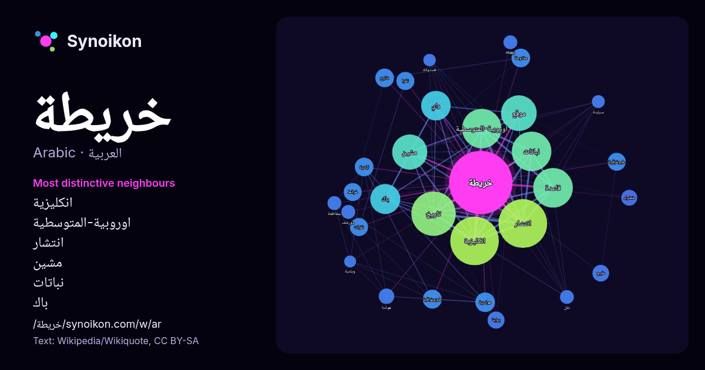

العربية · قائمة كلمات اليوم
خريطة
“map” · الكلمات الموجودة حولها في 877 ورودًا من ويكيبيديا, Wikiquote.

الجيران الأكثر تميّزًا
- انكليزية 175×
- اوروبية-المتوسطية 130×
- انتشار 111×
- مشين 103×
- نباتات 71×
- باك 70×
- واي 56×
- قاعدة 54×
- تاريخ 31×
- موقع 31×
- طوبوغرافية 31×
- لبلدية 28×
- طبوغرافية 28×
- نقرات 28×
- تقرا 27×
- هولندية 25×
- خرائط 24×
- مفتوحة 20×
- بوابة 20×
- شارع 18×
× = كم مرة أكثر مما في نصوص ويكيبيديا العامة.
الجيران الأكثر تكرارًا
- انتشار 198
- انكليزية 197
- تاريخ 165
- قاعدة 131
- نباتات 131
- اوروبية-المتوسطية 130
- موقع 106
- مشين 103
- باك 75
- واي 73
- عالم 42
- هولندية 32
- طوبوغرافية 30
- شارع 29
- لبلدية 29
- مفتوحة 29
- تقرا 27
- ثلاث 27
- خرائط 27
- طبوغرافية 27
في السياق
- بالقرب من كركوك بالعراق رسمت عليه خريطة لوادي، نهر بين تلتين ويقدر بانها تعود للقرون 24 إلى 25 قبل الميلاد كما أن خريطة أخرى تعود للقرون 12 إلى 14 قبل الميلاد Wikipedia snippets · خريطة
- أو إقليم أو دولة أو قارة». خريطة عالم تفاعلية (مع تصنيف المناخ) خريطة سياسية بسيطة للعالم خريطة طبيعية بسيطة للعالم خريطة طبوغرافية للعالم الدول حسب نمو Wikipedia snippets · خريطة العالم
- لؤي حسين خريطة (مواليد عام 1967 في الزبداني) مهندس مدني وسياسي سوري شغل منصب وزير الإدارة المحلية والبيئة في حكومة محمد غازي الجلالي من 23 ايلول 2024 Wikipedia snippets · لؤي خريطة
- أو التصميم الكارتوجرافي، هو عملية إنشاء الخريطة، وتطبيق مبادئ التصميم ومعرفة كيفية استخدام الخرائط لإنشاء خريطة تتمتع بجاذبية جمالية ووظيفة عملية. وهي Wikipedia snippets · تصميم الخريطة
- خريطة المستقبل (الإنجليزية: Future map) هي طريقة لبناء سيناريوهات استنادًا إلى جمع الأحداث المتوقعة. يستند هذا المفهوم على فكرة أن مجموعة من الأشخاص الذين Wikipedia snippets · خريطة المستقبل
- المختلفة. خريطة الكوروبلث هي خريطة موضوعية يتم فيها تلوين المناطق بشكل مختلف لإظهار قياس متغير إحصائي يتم عرضه على الخريطة. توفر خريطة الكوروبلث طريقة سهلة لتصور Wikipedia snippets · تلوين الخريطة
- خريطة الشبح تعديل - تعديل مصدري - تعديل ويكي بيانات خريطة الشبح: قصة الوباء الأكثر رعبا في لندن - وكيف غيّر العلوم والمدن والعالم الحديث (الإنجليزية: Wikipedia snippets · خريطة الشبح
- (Disjunctive normal form) للتعابير المنطقية، حيث يكون مخرج خريطة كارنوف أبسط وأقل احتمالا للخطأ. عن طريق خريطة كارنوف يمكن تحويل أي صيغة منطقية منفصلة إلى صيغة Wikipedia snippets · خريطة كارنوف
كلمات أخرى
- أغنية
- إله
- تاريخ
- جبل
- جرس
- جزيرة
- جسر
- حديقة
- حصان
- حقيقة
- حياة
- خبز
- خريف
- ذهب
- زمن
- ساعة
- شاي
- شتاء
- صحة
- صحراء
- صمت
- صيف
- طبيعة
- طريق
- طعام
- ظل
- عائلة
- عاصفة
- عسل
- علم
- عمل
- غابة
- فن
- قطار
- قطة
- قلب
- قوة
- كلب
- لغة
- ماء
- مال
- مدينة
- مرآة
- مطر
- ملح
- مناخ
- موت
- نجم
- والدة
حُسبت مسبقًا في 2026-10-09 بالإعدادات الافتراضية (±5 كلمات، مدوّنة متوسطة). يمكن للخريطة التفاعلية تحديثها ببيانات حية.
واجهة مترجمة آليًا؛ نرحب بالتصحيحات.